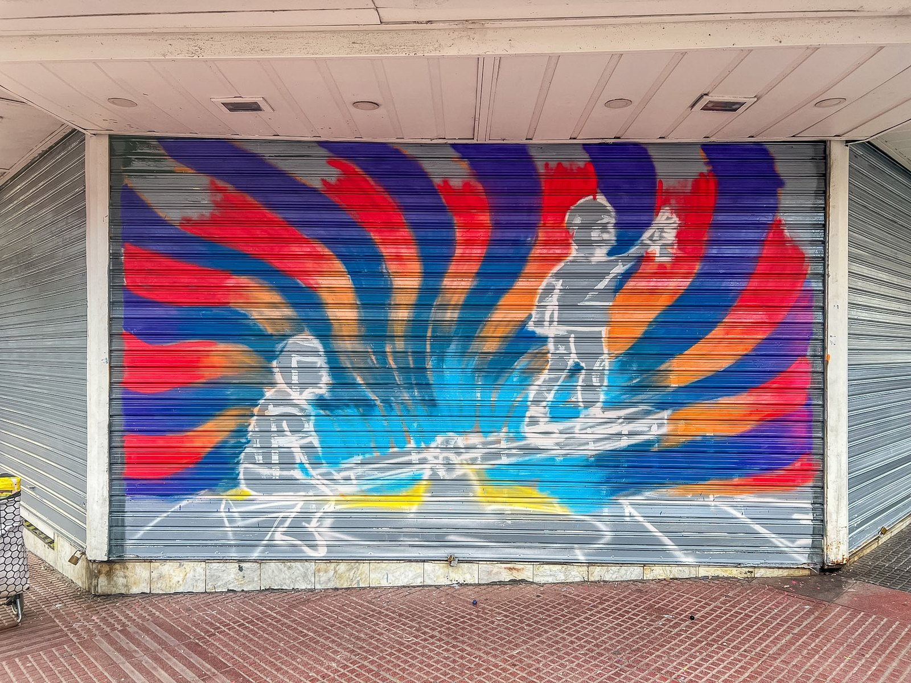
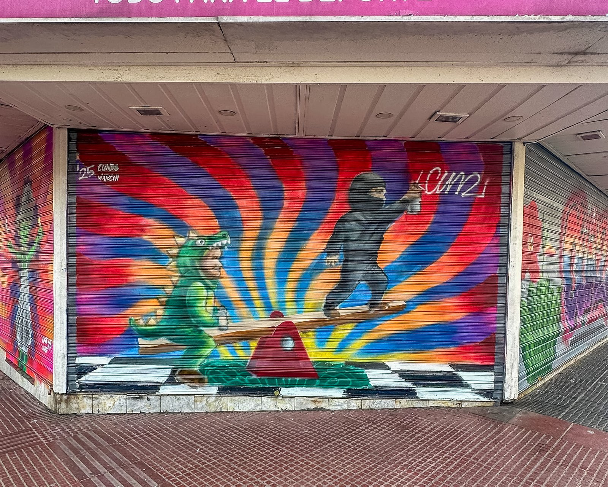
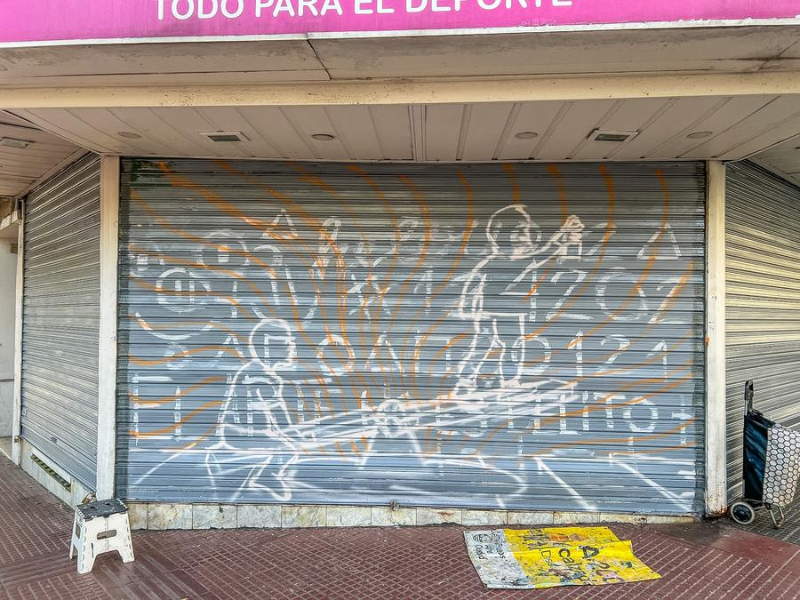
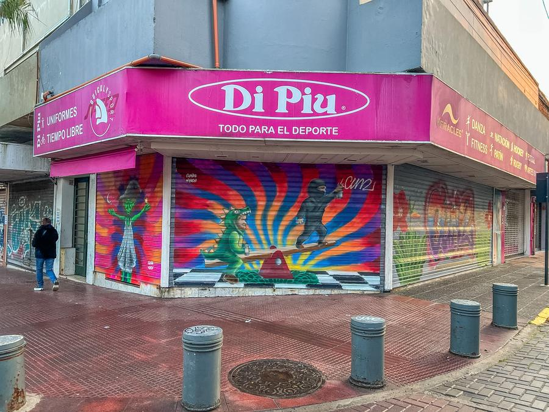
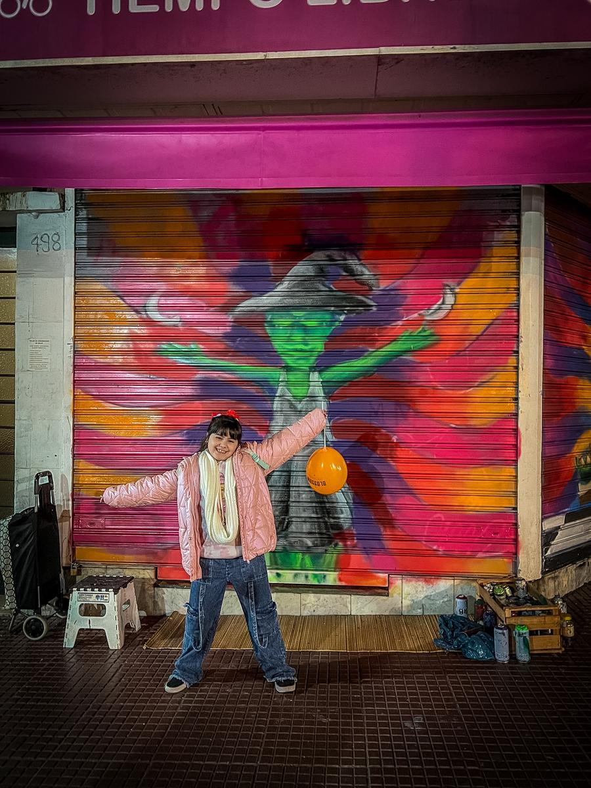
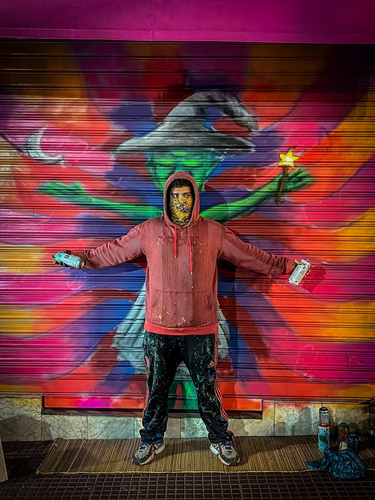
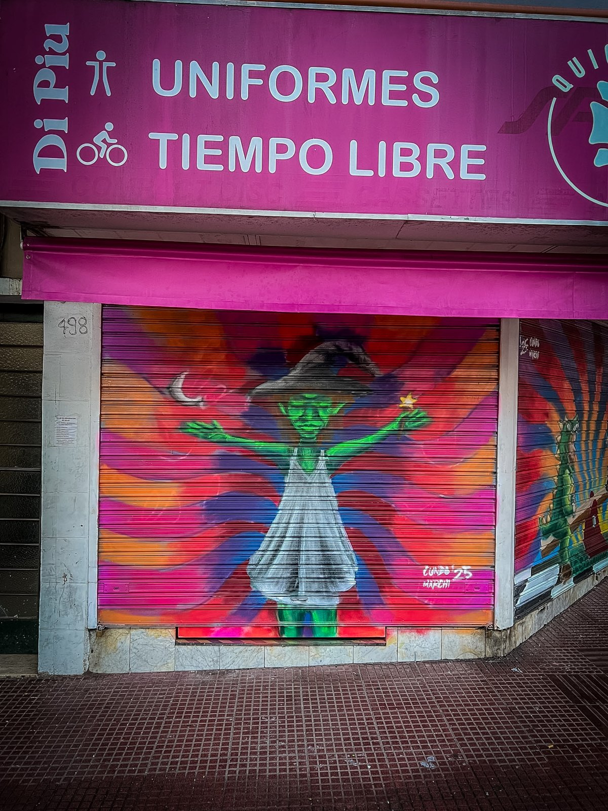

The Seesaw
Commission WorkSpray Paint

Three characters balance on a seesaw across a storefront's roller shutters.







Three characters balance on a seesaw across a storefront's roller shutters.






